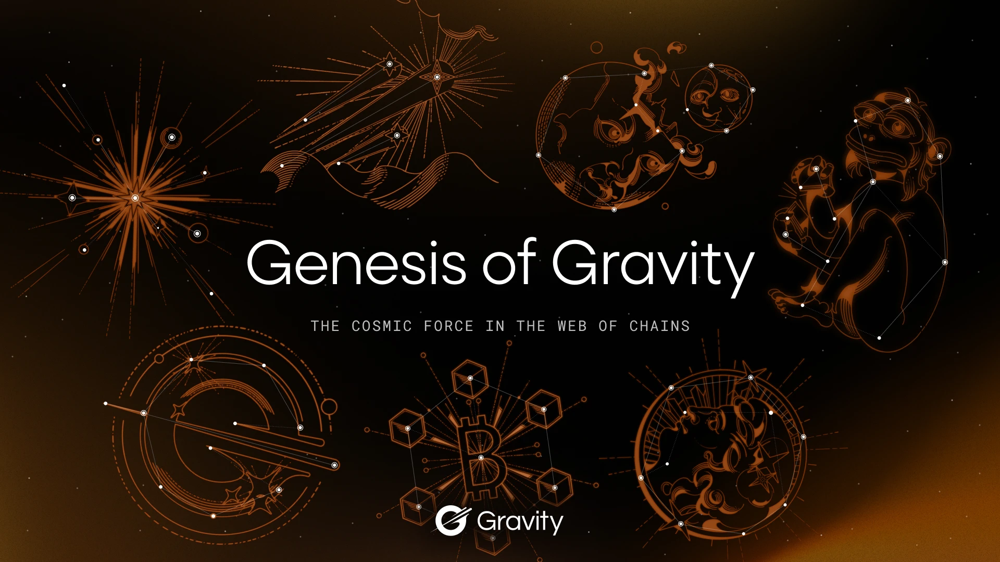
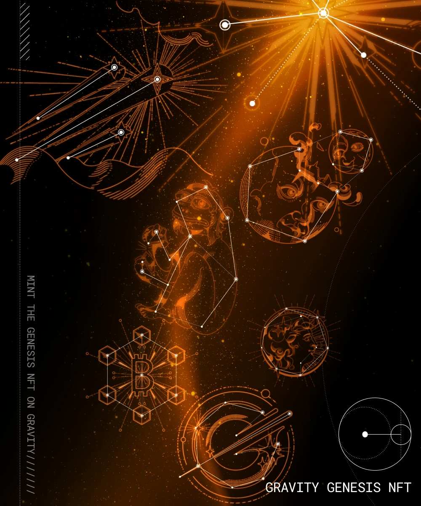
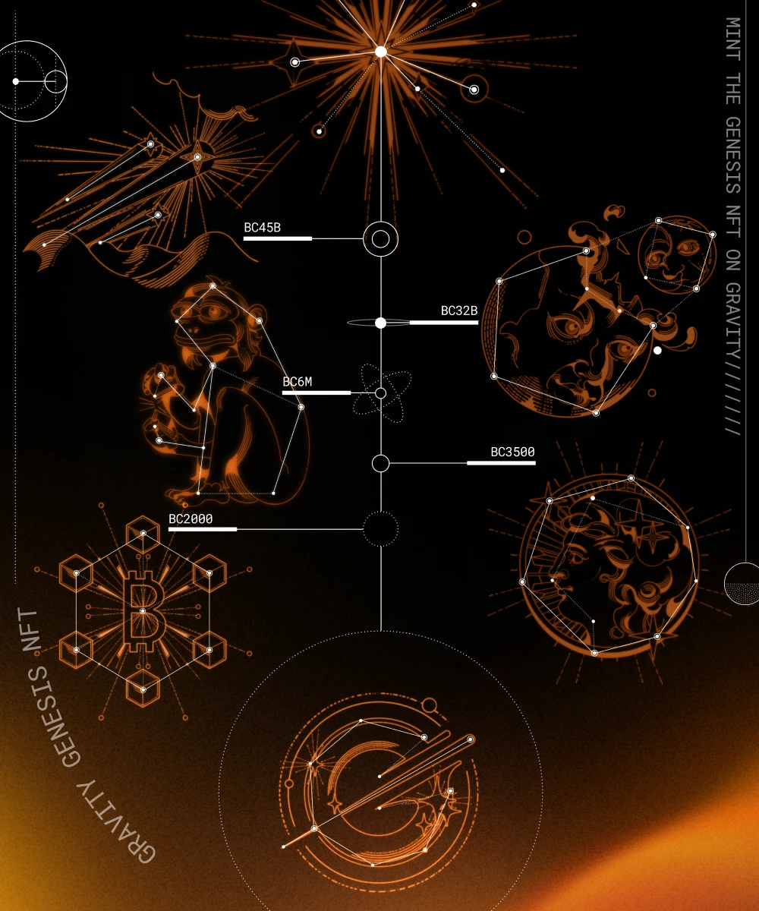
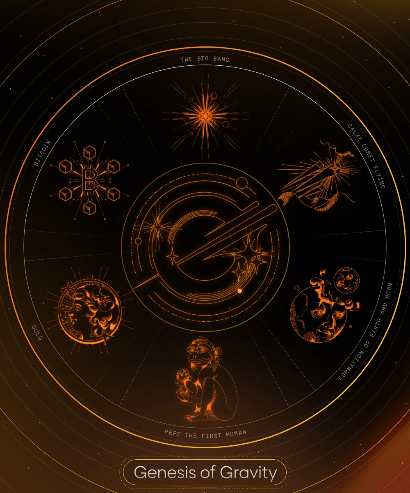
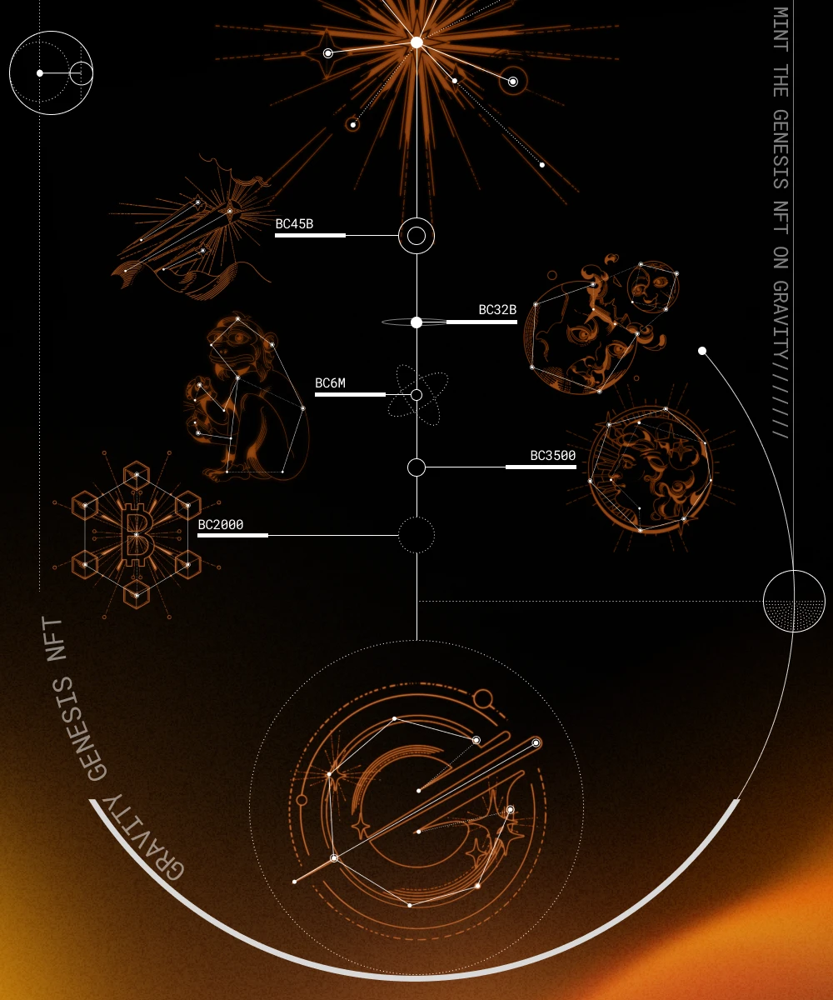

The Challenge
Launch Gravity from a standing start. The Genesis NFT collection needed to capture attention and establish a distinctive visual direction for the chain’s brand.

Launch Gravity from a standing start. The Genesis NFT collection needed to capture attention and establish a distinctive visual direction for the chain’s brand.
We traced a path from the birth of the internet to the rise of blockchain, and onward to Gravity—turning the collection into a visual metaphor for the chain’s genesis.



